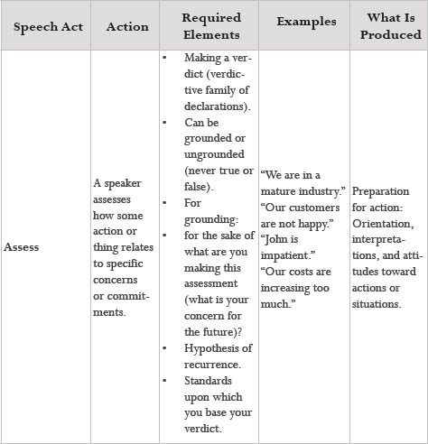
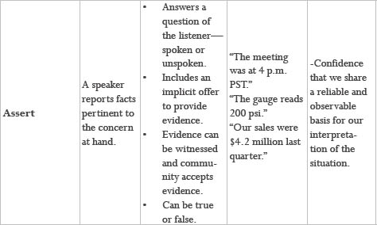

Speech Acts Review Part 2


Ungrounded Assessments and Resignation
Given that assessments are declarations about what kinds of possibilities for action are opened and closed for us in the future, there’s one particular class of assessments that should ring warning bells. When someone makes the assessment that there’s no action to be taken toward some concern, and no hope of the situation changing in the future, we say that they’re stuck in resignation in that domain. We’ve all noticed that a person who’s resigned fails to see possibilities for action that are as plain as day to other observers, indicating that, for the most part, assessments that lead to resignation are inherently ungrounded. For example, people generalize across domains of concern, using few assertions, saying that because they once failed a high-school algebra class they’ll “never be good at math.” Learning to distinguish and examine the grounding of assessments can thus be a powerful tool for rooting out areas in which resignation is limiting our possibilities in life.
Objectivity and Action
Now that we’ve distinguished the phenomena of assertions and assessments and brought action back to the center of our concern in gathering information, we’re able to appreciate the ways that information can be objective. One of the most compelling aspects of a traditional understanding of how the world works is a strong intuition that everything isn’t relative to individual interpretation. We endorse that intuition. But we also soundly reject the notion that the only alternative to an objective “natural order” is some kind of fuzzy-headed relativism in which individual interpretations, no matter how bizarre, are all equally valid.
The answer to this dilemma is clear when we realize that human beings are social and historical beings who create the future together via action. The criteria for objectivity, then, are social. Recurrent effectiveness in bringing forth action, historical tradition, and the existence of a community with shared standards are sources of a kind of objectivity that, while not absolute truth, provide a means of distinguishing “good” and “bad” assertions and assessments. Grounded assessments can produce the results that good decision making was supposed to provide, without the pitfalls of looking at information as the “truth” about the world. They allow us to take effective action in a way that’s more flexible and open to other interpretations, without the paralysis of resignation or the endless search for a perfect decision.
Assessment Delivery Exercise
This exercise consists of two roles, a recipient and a contributor. The contributor makes an assessment; the recipient receives it. This exercise presumes a previous team agreement to give and receive assessments for the sake of developing effective teamwork. It also requires a minimal level of trust.
Contributor: (Say their name), I have an assessment for you. Is now a good time to give it you?
Recipient: (Settle and respond) Yes or No.
If no, say when you’d like to talk. If yes, continue.
Contributor: My assessment is (make the assessment)…and the reason I say that is…(give your grounding; assertions (facts) are most effective for revealing your standards).
Recipient: Thank you for making the assessment.
Contributor: You’re welcome.
Options
Clarification:
Recipient: I’d like to discuss this further with you. (You could have questions about the grounding of the assessment. What assertions does the person have in support of the assessment? What concerns are behind the assessment?)
Negative assessment:
Recipient: Do you have any suggestions about what I can do to shift your assessment and hence make a stronger contribution to our team?
Positive assessment:
Recipient: Do you have any suggestions about what I can do to capitalize on this assessment and hence make a stronger contribution to our team?
No action:
Recipient: I’ll consider what you said. Thank you.
Note: As you complete this exercise, please reflect on your mood. If the recipient is in a negative mood, this may indicate that there are additional conversations to explore.
Fundamental Elements of an Assessment
The act of assessing requires that all the following elements appear in the listening of the relevant parties:
To be grounded, an assessment requires the following additional elements:
Fundamental Elements of an Assertion
The act of asserting requires that each the following elements appear in the listening of the relevant parties: